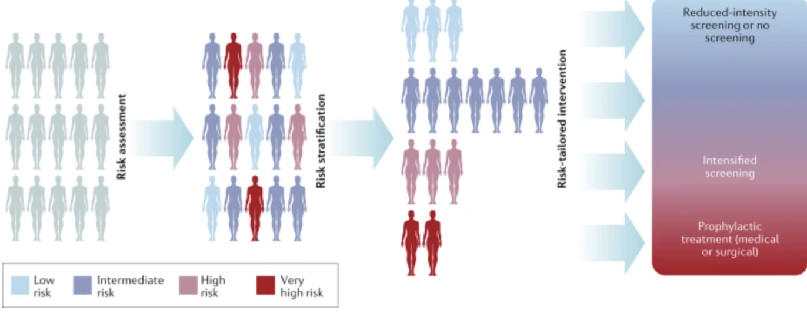

Data-Driven Healthcare Analytics for Early Detection
Designed a data-driven reminder system to promote timely cancer screening based on individual risk factors such as age, sex, and ethnicity. The project focused on improving screening rates by tailoring reminders to underserved populations using public health data.
This project highlights the use of data analytics to support early cancer detection and reduce disparities in preventive healthcare access, particularly focusing on medically underserved communities.
How to leverage public health data to create personalized cancer screening reminders that address health disparities and improve early detection rates in underserved populations?
Analyzed California Cancer Registry datasets on cancer incidence by demographic groups to identify patterns and risk factors.
Processed and cleaned data to identify high-risk age groups for breast, cervical, colorectal, and lung cancer screenings.
Developed logic for personalized screening recommendations based on national guidelines (USPSTF).
Built the foundation for a user interface that generates age-specific screening reminders.
Focused on addressing health disparities by prioritizing reminders for medically underserved communities.
Explore the interactive prototype that demonstrates the user interface for our cancer screening reminder system. This prototype showcases how users can receive personalized screening recommendations based on their individual risk factors.
Interactive questionnaire to assess individual cancer risk factors
Automated notifications based on screening schedules and guidelines
Visual dashboard to monitor screening history and upcoming appointments
Click through the interactive prototype to see how the cancer screening reminder system guides users through personalized health recommendations.
View Full Prototype in FigmaSample screening logic demonstrating the personalized recommendation algorithm:
# Personalized screening recommendation logic
def generate_screening_recommendations(age, sex, ethnicity, risk_factors):
recommendations = []
# Breast cancer screening
if sex == 'female' and age >= 40:
if age >= 50 or 'family_history' in risk_factors:
recommendations.append({
'type': 'breast_cancer',
'test': 'mammography',
'frequency': 'annual',
'priority': 'high' if ethnicity in high_risk_groups else 'standard'
})
# Cervical cancer screening
if sex == 'female' and 21 <= age <= 65:
recommendations.append({
'type': 'cervical_cancer',
'test': 'pap_smear',
'frequency': 'every_3_years',
'priority': 'high' if ethnicity in underserved_groups else 'standard'
})
return recommendations
This project demonstrates how data analytics can be leveraged to support early cancer detection and reduce disparities in preventive healthcare access. Through this work, I gained experience in public health data analysis, algorithm development for healthcare applications, and designing user-centered health technology solutions.